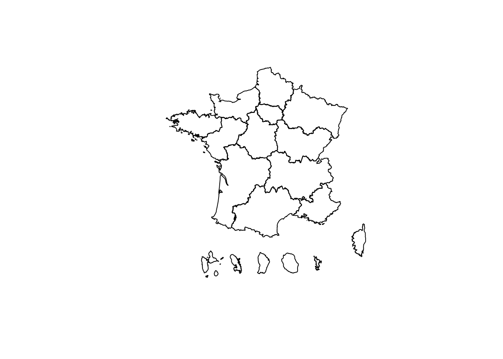
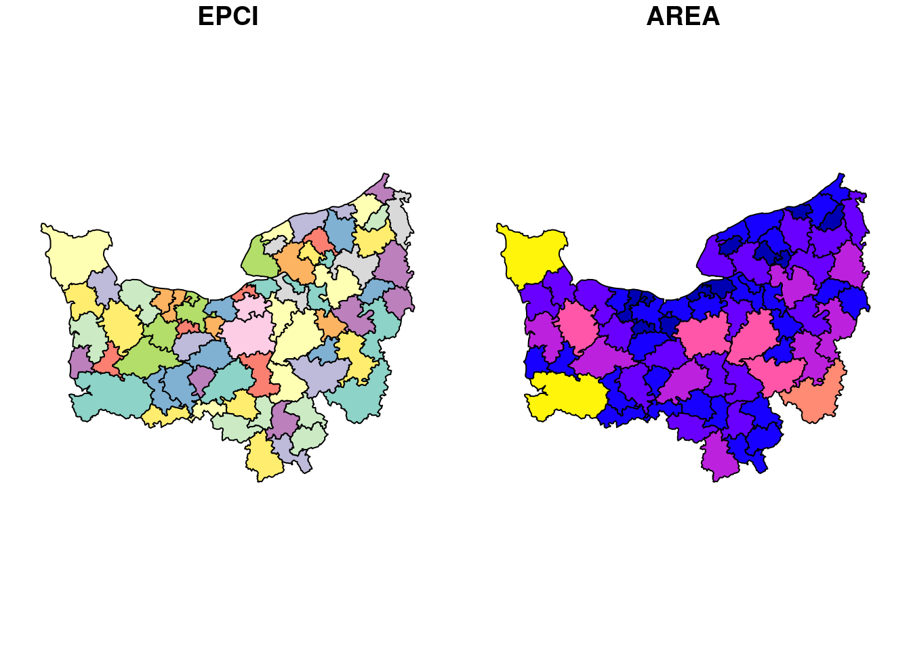

Chapitre 4 Lire et écrire des données spatiales avec R
Dans ce chapitre, nous allons utiliser les packages suivants :
# CRAN
library(DT)
library(remotes)
library(RPostgres)
library(sf)
library(spData)
library(tidyverse)
# Gitlab-forge
library(datalibaba)
# Github
library(COGiter)
library(CARTElette)Le package {sf} s’appuie sur la librairie externe GDAL (Geospatial Data Abstraction Library) pour lire et écrire les données spatiales.
GDAL est une librairie permettant de lire et d’écrire des données vecteur et raster de n’importe quel format de fichier ou base de données.
Les fonctions de lecture et d’écriture de {sf} s’appellent st_read() et st_write().
Pour lire des données spatiales, st_read() a besoin :
- d’une source de donnée : un fichier, un répertoire, une base de données ;
- d’un layer: une table de données spatiale spécifique du fichier, répertoire, ou de la base de données ;
On peut avoir besoin de rajouter des options spécifiques au format de la source.
Par exemple, sur des données en csv, il faut pouvoir spécifier la composante spatiale des données (les champs X, Y ou longitude, latitude).
4.1 Lire des fichiers plats
st_read() permet de lire des données spatiales disponibles en fichier plat.
Le format de fichier plat le plus populaire en géomatique est ESRI Shapefile. Ce format, en plus de ne pas être un format ouvert, a des limites bien documentées3.
Avec l’avènement du web, le format GeoJSON se développe beaucoup, bien qu’il soit aussi limité.
Le format considéré comme le plus prometteur est le format OGC GeoPackage promu par l’Open Geospatial Consortium4.
Mais la liste des formats lisibles par {sf} est bien plus vaste.
Pour l’obtenir, on peut utiliser st_drivers(), qui liste les drivers utilisables par {sf} :
DT::datatable(st_drivers() %>% arrange(name))Exemple de lecture d’une donnée au format GeoPackage: les données sur la Leucémie à New York disponibles dans le package spData5.
geo_fichier <- system.file("shapes/NY8_bna_utm18.gpkg", package = "spData")
NY_leukemia <- st_read(dsn = geo_fichier)4.2 Ecrire des fichiers plats
Ecrire des fichiers plats va se faire avec la fonction st_write().
st_write(obj = NY_leukemia, dsn = "extdata/NY_leukemia.gpkg")Notez que si vous cherchez à exporter une nouvelle fois ce fichier, vous aurez un message d’erreur.
Pour pouvoir écraser ce fichier, vous avez deux options :
- Utiliser le paramètre
layer_optionqui vous permet d’inclure des options propres au driver utilisé.
st_write(
obj = NY_leukemia,
dsn = "extdata/NY_leukemia.gpkg",
append = FALSE
)- Utiliser le paramètre
delete_layer = TRUEdest_write()qui vous permet d’écraser les layers avant sauvegarde (paramètre qui ne dépend pas du driver utilisé).
st_write(
obj = NY_leukemia,
dsn = "extdata/NY_leukemia.gpkg",
delete_layer = TRUE
)A noter que st_write() peut exporter des tables géographiques au format csv :
st_write(
obj = NY_leukemia,
dsn = "extdata/NY_leukemia.csv",
layer_options = "GEOMETRY=AS_XY",
delete_layer = TRUE
)Il faut juste lui préciser comment on souhaite écrire la géométrie dans la table exportée, avec
layer_options = "GEOMETRY=AS_WKT" ou layer_options = "GEOMETRY=AS_XY".
4.3 Lire des données spatiales du web
4.3.1 Lire des données geojson
sf peut lire un geojson qu’il soit hébergé sur un serveur compréssé ou non ou encore disponible par api.
4.3.1.1 Exemple 1 (geojson classique):
st_read("https://france-geojson.gregoiredavid.fr/repo/regions.geojson") %>%
filter(code > "10") %>%
select(code) %>%
plot()4.3.1.2 Exemple 2 (api)
L’api de découpage administratif permet de charger des contours administratifs. Dans l’exemple suivant, nous chargeons les contours des epci du département 44.
url <- 'https://geo.api.gouv.fr/epcis?codeDepartement=44&format=geojson&geometry=contour'
st_read(url) %>%
select(code) %>%
plot()4.3.2 Exemple 3 (geojson compressé)
sf repose sur GDAL et permet également de lire des geojsons compressés. On pourrait faire de même avec un shapefile compressé en .zip. Cela évite de télécharger le fichier et de le décompresser. Voici un exemple pour récupérer les bâtiments de la commune de Nantes provenant du PCI redistribué par Etalab.
vfs <- '/vsigzip//vsicurl/https://cadastre.data.gouv.fr/data/etalab-cadastre/latest/geojson/communes/44/44109/cadastre-44109-batiments.json.gz'
batiment_nantes <- st_read(dsn = vfs) Pour aller plus loin sur les Virtual File Systems : https://gdal.org/user/virtual_file_systems.html
4.3.3 Lire des données WFS
sf permet aussi de lire des données WFS.
crte <- sf::st_read(dsn = 'https://datacarto.sigloire.fr/wfs?REQUEST=getCapabilities&service=WFS&VERSION=2.0.0', layer = "ms:r_portrait_crte_r52")
crte %>% select(nom_territ) %>% plot()On indique au niveau du paramètre dsn l’url du webservice WFS de la plateforme et au niveau du parametre layer le nom de la couche.
Pour aller plus loin dans l’exploitation des flux WFS dans R : https://inbo.github.io/tutorials/tutorials/spatial_wfs_services/.
4.4 Lire/écrire des données spatiales sur PostGIS
PostGIS, c’est l’extension géomatique de PostgreSQL permettant de stocker des données géo sur un serveur de données et de les manipuler.
R vous permet de vous connecter simplement à une base PostGIS.
Pour cela vous aurez besoin du package {DBI} (package permettant de s’interfacer à des bases de données) et du package {RPostgres} (interface à PostgreSQL en particulier).
Rstudio a développé tout un site sur les interactions entre les bases de données et R, vous pouvez le trouver à l’adresse suivante : db.rstudio.com.
Rstudio possède même depuis la version 1.1 un onglet de connexion vous permettant de visualiser vos connexions aux bases.
Pour se connecter à une base, il faut définir un driver (à quelle type de base on veut se connecter et selon quel protocole) et un connecteur (les informations de connexion).
drv <- dbDriver("Postgres")
con <- dbConnect(drv,
dbname = "nom_de_ma_db",
host = "adresse_ip_du_serveur",
port = numero_du_port,
user = "nom_utilisateur",
password = "mot_de_passe_super_secret"
)Pour lire des données sur le serveur, on va utiliser encore la fonction st_read() en lui définissant 2 paramètres : le connecteur et la requête que l’on veut réaliser.
ma_table <- st_read(con, query = "SELECT * FROM le_schema.ma_table")L’avantage ici est que vous pouvez faire travailler le serveur directement sans avoir à faire travailler votre poste de travail.
Vous pouvez très bien, dans cette requête sql, réaliser quelques filtres, sélections et agrégations. Celles-ci seront alors réalisées par le serveur posgreSQL et non par votre session R qui ne récupérera que le résultat.
Vous pouvez écrire vos données ensuite de la même façon avec st_write()
st_write(ma_table,
dsn = con,
layer = Id(schema = "schema", table = "ma_table")
)Un package, encore expérimental, de la DREAL Pays de la Loire, {datalibaba} simplifie l’écriture des instructions de lecture/écriture de données vers ou depuis un SGBD Postgresql/postgis.
Il propose de stocker vos identifiants de connexion dans vos variables d’environnement, c’est à dire en dehors de votre script, afin d’en préserver la confidentialité, mais aussi de vous éviter de les réécrire dans chaque script.
L’utilisateur n’a plus à se préoccuper du driver de connexion ni de la fonction de lecture ou de comment placer le nom du schéma par rapport au nom de la table.
Les types propres à R, comme les facteurs, sont préservés au ré-import.
Les instruction précédentes deviennent :
remotes::install_gitlab('dreal-pdl/csd/datalibaba', host = "gitlab-forge.din.developpement-durable.gouv.fr")
library(datalibaba)
poster_data(data = regions_geo, schema = "admin_express", table = "n_regions", pk = 'REG', db = 'referentiels')
station <- importer_data(table = "station", schema = "pesticides", base = "production")Pour tester ces fonctions, le SSP Cloud permet de lancer des instances de postgresql/postgis et de les interoger depuis une session RStudio.
4.5 Convertir un dataframe
Une autre façon d’obtenir un spatial dataframe est de convertir un objet existant en objet sf. Par exemple, partir d’un dataframe sur lequel on va définir à la fois la ou les colonnes contenant la dimension géographique et le crs de référence. Ou encore convertir un objet de type sp en objet de type sf.
Pour cela, la fonction st_as_sf() permet de convertir un objet en objet sf en définissant la composante spatiale.
La fonction st_set_crs() permet de définir le crs de notre objet.
Exemple, nous allons lire les coordonnées géographiques des préfectures de région.
prefectures <- read_csv2("extdata/prefecture.csv")
prefectures_geo <- st_as_sf(prefectures, coords = c("x", "y"), crs = 2154) 4.6 Données contenues dans des packages
Depuis le développement de {sf}, de nombreux packages proposent des données géographiques.
Pour la France, les packages {CARTElette} et {COGiter} propose des fonds de cartes aux contours administratifs.
Ils s’installent depuis github :
remotes::install_github("MaelTheuliere/COGiter")
remotes::install_github("antuki/CARTElette/CARTElette@RPackage"){CARTElette} propose de télécharger les différents fonds de plan administratifs d’admin-Express COG de l’IGN, de tous les millésimes jusque 2021.
charger_carte(COG = 2021, nivsupra = "REG", geometrie_simplifiee = FALSE) %>%
st_geometry() %>%
plot()Reading layer `REG_2021_CARTElette' from data source
`/tmp/RtmpwytDxM/REG_2021_CARTElette.shp' using driver `ESRI Shapefile'
Simple feature collection with 18 features and 2 fields
Geometry type: MULTIPOLYGON
Dimension: XY
Bounding box: xmin: -5.141241 ymin: 40.26843 xmax: 9.560094 ymax: 51.08899
Geodetic CRS: WGS 84
{COGiter} contient le dernier millésime des fonds de plan administratifs.
Ces couches sont obtenues par simplification des couches admin-express COG de l’IGN et sont adaptées à la visualisation d’indicateurs statistiques.
Il comprend pour la métropole et chaque DROM un fond de carte pour les niveaux communes, EPCI, départements, régions :
ls("package:COGiter", pattern = "_geo$") [1] "communes_971_geo" "communes_972_geo" "communes_973_geo"
[4] "communes_974_geo" "communes_976_geo" "communes_geo"
[7] "communes_metro_geo" "departements_971_geo" "departements_972_geo"
[10] "departements_973_geo" "departements_974_geo" "departements_976_geo"
[13] "departements_geo" "departements_metro_geo" "epci_971_geo"
[16] "epci_972_geo" "epci_973_geo" "epci_974_geo"
[19] "epci_976_geo" "epci_geo" "epci_metro_geo"
[22] "filtrer_cog_geo" "regions_971_geo" "regions_972_geo"
[25] "regions_973_geo" "regions_974_geo" "regions_976_geo"
[28] "regions_geo" "regions_metro_geo" La fonction filtrer_cog_geo() vous permet d’obtenir une liste de spatial dataframes des différentes échelles, centrée sur une partie du territoire (que ce soit une commune, un EPCI, un département ou une région) dès lors que vous connaissez son code officiel.
Exemple sur la Normandie :
normandie <- filtrer_cog_geo(reg = "28")
glimpse(normandie)List of 4
$ communes : sf [2,651 × 3] (S3: sf/tbl_df/tbl/data.frame)
..$ DEPCOM : chr [1:2651] "50272" "76515" "14293" "27021" ...
..$ AREA : num [1:2651] 17596289 3390000 6701110 8186754 5573846 ...
..$ geometry:sfc_MULTIPOLYGON of length 2651; first list element: List of 1
.. ..- attr(*, "class")= chr [1:3] "XY" "MULTIPOLYGON" "sfg"
..- attr(*, "sf_column")= chr "geometry"
..- attr(*, "agr")= Factor w/ 3 levels "constant","aggregate",..: NA NA
.. ..- attr(*, "names")= chr [1:2] "DEPCOM" "AREA"
$ epci : sf [71 × 3] (S3: sf/tbl_df/tbl/data.frame)
..$ EPCI : Factor w/ 1256 levels "200000172","200000438",..: 18 38 95 96 113 118 157 226 231 244 ...
..$ AREA : Units: [m^2] num [1:71] 5.76e+08 6.64e+08 2.82e+08 3.66e+08 5.73e+08 ...
..$ geometry:sfc_POLYGON of length 71; first list element: List of 1
.. ..- attr(*, "class")= chr [1:3] "XY" "POLYGON" "sfg"
..- attr(*, "sf_column")= chr "geometry"
..- attr(*, "agr")= Factor w/ 3 levels "constant","aggregate",..: NA NA
.. ..- attr(*, "names")= chr [1:2] "EPCI" "AREA"
$ departements: sf [5 × 3] (S3: sf/tbl_df/tbl/data.frame)
..$ DEP : Factor w/ 101 levels "01","02","03",..: 14 26 51 62 77
..$ AREA : Units: [m^2] num [1:5] 5.59e+09 6.04e+09 6.02e+09 6.14e+09 6.32e+09
..$ geometry:sfc_POLYGON of length 5; first list element: List of 1
.. ..- attr(*, "class")= chr [1:3] "XY" "POLYGON" "sfg"
..- attr(*, "sf_column")= chr "geometry"
..- attr(*, "agr")= Factor w/ 3 levels "constant","aggregate",..: NA NA
.. ..- attr(*, "names")= chr [1:2] "DEP" "AREA"
$ regions : sf [1 × 3] (S3: sf/tbl_df/tbl/data.frame)
..$ REG : Factor w/ 18 levels "01","02","03",..: 9
..$ AREA : Units: [m^2] num 3.01e+10
..$ geometry:sfc_POLYGON of length 1; first list element: List of 1
.. ..- attr(*, "class")= chr [1:3] "XY" "POLYGON" "sfg"
..- attr(*, "sf_column")= chr "geometry"
..- attr(*, "agr")= Factor w/ 3 levels "constant","aggregate",..: NA NA
.. ..- attr(*, "names")= chr [1:2] "REG" "AREA"plot(normandie$epci)
Le package COGiter propose également :
- les tables du COG 2022 de l’Insee,
- une table de passage des COG historiques vers le COG millésimé 2022,
- des fonctions d’aide à au passage de jeux de données vers le millésime du COG 2022,
- des fonctions de calculs d’agrégats aux différentes échelles territoriales,
- des fonctions d’aide à la sélection des différents fond de cartes nécessaire à la mise en page de cartes statistiques.
Son utilisation est désormais vue lors du module 2.
Issues de Waller and Gotway (2004) Applied Spatial Statistics for Public Health Data.↩︎